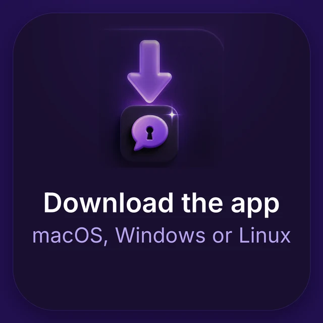
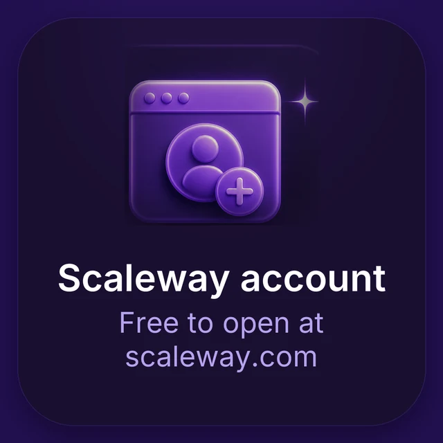
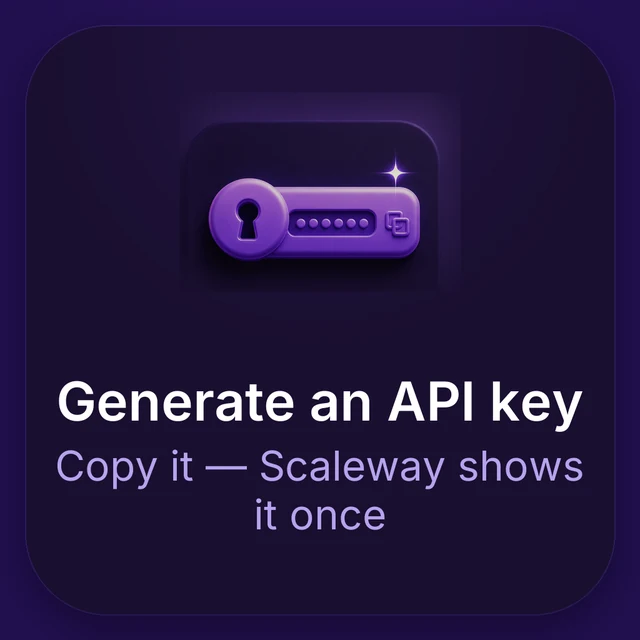

A desktop app for AI chat, with the model hosted in Europe. It runs GLM-5.2 — developed by Z.ai, hosted in Paris by Scaleway — and your keys are stored only on your device, sent to your provider to authenticate you and to nobody else. There is no account here and no server of ours in the path; this site and the downloads are served by GitHub.

1
2
3Free and open source — but you'll need a paid Scaleway key. Sovatela has no AI of its own: it uses your own Scaleway account, and Scaleway bills you directly for what you use — typically a few cents a day for ordinary chat. Sovatela never handles payment and takes no cut, and the app shows a running cost estimate on your device.
macOS builds are signed and notarized by the developer, so they open normally. Windows and Linux builds are not signed yet — on Windows, SmartScreen will say the publisher is unknown, and opening it takes More info → Run anyway. That warning is accurate: it means nobody has paid a certificate authority to vouch for this installer.
Checking the SHA-256 below tells you the file arrived intact — not that we are who we say we are. The list is not signed, so it proves the download matches what was published, not who published it. On macOS, notarization is the check that does more: it is verified against Apple, not against us.
Also available: Windows .msi (for managed deployment) · Debian/Ubuntu .deb · Fedora/RHEL .rpm
Sovatela has no automatic updater, and Check for updates only helps if you press it. Two ways to hear about a release — including a security release — without one:
There is no mailing list and no signup, deliberately. Both routes are things you subscribe to at your end: the feed is a static file your reader fetches, and the GitHub option is held by GitHub. No address is collected here, so there is none to lose.
After downloading, check the file's hash matches below. On macOS/Linux:
shasum -a 256 <file> · On Windows:
certutil -hashfile <file> SHA256.
The canonical list is also at SHA256SUMS.txt.
| macOS (universal) | e4a0d2f5be446d7b94963552f5efc18ea2eb391a552d6d6dd29b3010f48dc189 |
| Windows (.exe) | ce6270b693fc245746a242b6ff66796fe934aabca71e3bd094a29f489d3e29d0 |
| Windows (.msi) | 4983632bb043bb217a8b5a703172652769d899fd4ca849569c05a4ad8c7c41d0 |
| Linux (.AppImage) | 20912373b81f82c000b73edd0e3e9eb44142032f120147f60db38920aa234fe8 |
| Linux (.deb) | df9005a9c8110a9c80a39628566d143913126ef7716ed773d3dbffcf8eb72e9f |
| Linux (.rpm) | ab324cb2a33c60d27e9b98757f1e16bc4201fcfab8c1932db8f34e0a18a2df51 |